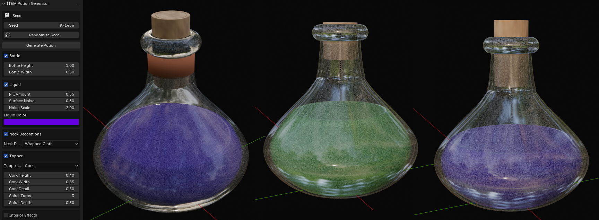

Metadata
- Addon File
z_blender_ITEM_potion.py- Tags
- item potion bottle procedural fantasy generator
generate procedural potion bottles with modular components
Generate procedural potion bottles with modular components
Generates procedural potion bottles with modular components: glass bottle (Catmull-Rom spline profile spun around Z axis), liquid fill with surface effects, cork stopper with spiral groove and wood-grain shader, neck decorations, toppers, interior effects, and base decorations. Configurable dimensions, fill level, colors, and decoration types.
POTION GENERATOR
- generates procedural potion bottles with modular components
- useful for creating fantasy potions with various decorative elements
Properties
| Attr | Label | Type | Default | Range | Subtype / Options | Description |
|---|
use_bottle | Generate Bottle | bool | true | | | Enable/disable bottle generation |
use_liquid | Generate Liquid | bool | true | | | Enable/disable liquid generation |
use_neck | Add Neck Decorations | bool | false | | | Enable/disable neck decorations |
use_topper | Add Topper | bool | true | | | Enable/disable topper |
use_interior | Add Interior Effects | bool | false | | | Enable/disable interior effects |
use_base | Add Base Decorations | bool | false | | | Enable/disable base decorations |
bottle_height | Bottle Height | float | 1 | 0.1 .. 5 | | |
bottle_width | Bottle Width | float | 0.5 | 0.1 .. 2 | | |
liquid_fill_amount | Fill Amount | float | 0.7 | 0 .. 1 | | How full the bottle is |
liquid_noise_amount | Surface Noise | float | 0.3 | 0 .. 1 | | Amount of surface distortion |
liquid_noise_scale | Noise Scale | float | 2 | 0.1 .. 10 | | Scale of the surface noise |
liquid_color | Liquid Color | float vector | 0.2, 0.8, 0.2, 1 | 0 .. 1 | COLOR size=4 | Color of the potion liquid |
neck_decoration_type | Neck Decoration Type | enum | NONE | | | |
topper_type | Topper Type | enum | CORK | | | |
interior_effect_type | Interior Effect Type | enum | NONE | | | |
base_type | Base Type | enum | NONE | | | |
cork_height_factor | Cork Height | float | 0.22 | 0.05 .. 0.4 | | Height of the cork relative to bottle height |
cork_width_factor | Cork Width | float | 0.85 | 0.5 .. 1 | | Width of the cork relative to neck width |
cork_detail | Cork Detail | float | 0.5 | 0 .. 1 | | Amount of surface detail on the cork |
cork_spiral_turns | Spiral Turns | int | 3 | 1 .. 10 | | Number of turns in the cork spiral |
cork_spiral_depth | Spiral Depth | float | 0.3 | 0.1 .. 0.8 | | Depth of the spiral groove |
seed | Random Seed | int | 0 | 0 .. | | Seed for reproducible cork skew and other random effects (0 = random) |
Enum Items
Enum: neck_decoration_type (Neck Decoration Type)
| Identifier | Label | Description |
|---|
NONE | None | No neck decoration |
CLOTH | Wrapped Cloth | Cloth wrapped around neck |
CHAINS | Wrapped Chains | Chains wrapped around neck |
ROPE | Tied Rope | Rope tied around neck |
Enum: topper_type (Topper Type)
| Identifier | Label | Description |
|---|
NONE | None | No topper |
CORK | Cork | Simple cork stopper |
SPHERE | Sphere | Decorative sphere |
SPIRAL_SPHERE | Spiral Sphere | Sphere with spiral wrap |
SPIRAL_CURL | Spiral Curl | Curled spiral decoration |
Enum: interior_effect_type (Interior Effect Type)
| Identifier | Label | Description |
|---|
NONE | None | No interior effect |
BUBBLES | Bubbles | Floating bubbles |
LIGHT | Light Spark | Glowing light effect |
TENTACLES | Tentacles | Moving tentacles |
VORTEX | Spiral Vortex | Swirling vortex effect |
Enum: base_type (Base Type)
| Identifier | Label | Description |
|---|
NONE | None | No base decoration |
TEETH | Teeth | Decorative teeth around base |
CLAWS | Claws | Claw feet |
CLOTH | Wrapped Cloth | Cloth wrapped around base |
Operators
| Class | bl_idname | Label | Options | Description |
|---|
ZENV_OT_PotionGenerator | zenv.generate_potion | Generate Potion | | Generate a procedural potion bottle with modular components |
ZENV_OT_PotionRandomizeSeed | zenv.potion_randomize_seed | Randomize Seed | | Randomize the potion generator seed |